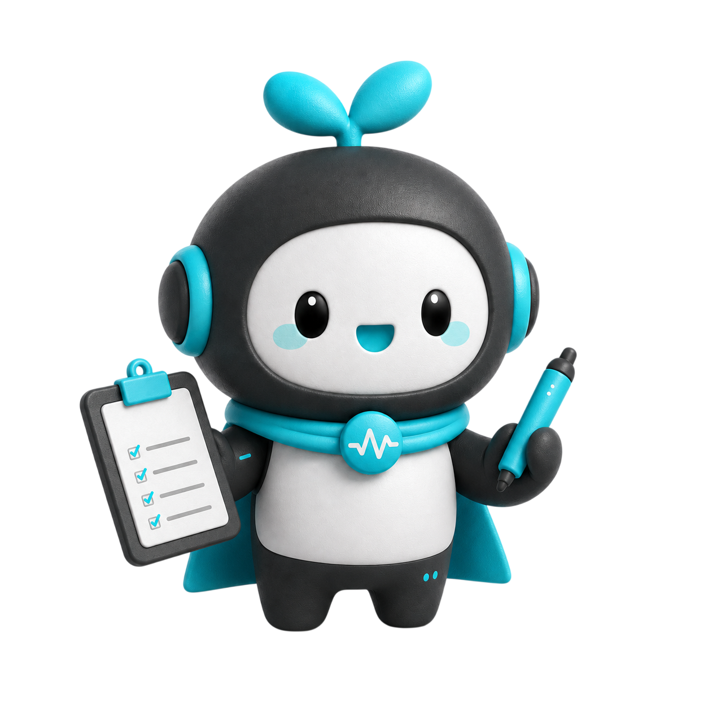

프레젠테이션을 위해
준비한 자료를 공유해주세요
자료 공유
- 만들어둔 발표 자료(ppt)를 첨부해주세요.
- 심사기준표나 발표와 관련된 파일이 있다면 첨부해주세요.
- 작성한 발표 대본이 있다면 공유해주세요. 없어도 괜찮아요.
pdf(추천), pptx, doc, png, txt, md (최대 50MB)
선택된 파일이 없습니다.
자세하게 작성된 내용일수록 정확도가 올라가요 UP
어떤 발표를 준비하고 있나요?
페르소나를 선택해주세요.
목적을 선택해주세요
발표 대본(스크립트) 수정
발표 대본 공유
미리 작성한 발표 대본을 공유해주세요. 작성한 내용이 없다면, 업로드한 발표 자료를 기반으로 대본 초안을 작성해드려요!
발표 목적과 대본을 확인해주세요.
주변 환경을 분석해볼게요
환경 체크
버튼을 눌러 장치를 확인해주세요.
정면을 바라보고 화면 안에 얼굴이 들어오도록 맞춰주세요
CAM
정자세를 유지하고 아래 문장을 5초 안에 읽어주세요
“낮말은 새가 듣고, 밤말은 쥐가 듣는다.”
00:05
발표 연습을 준비해주세요
발표 대본 공유
발표 시간 설정
실제 발표 연습을 해볼까요?
CAM
0:00
레코딩 시작 버튼을 눌러 시작하세요
- 연습을 시작하면 감지 로그가 표시됩니다.
AI가 분석하고 있어요
